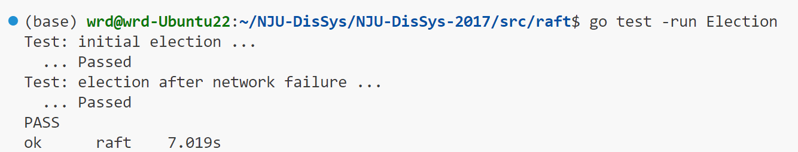
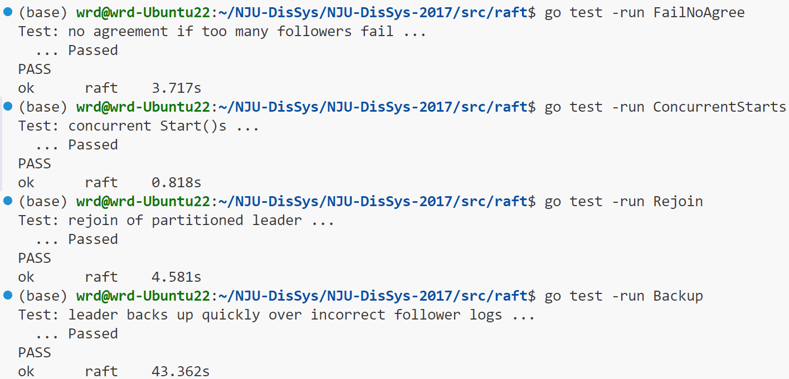

环境搭建
- 虚拟机 Ubuntu-22.04.1
- Go 1.23.4
第一次接触 Go 语言还是踩了一些坑的，因为看到老师给出的 ppt 要求在1.5以上，就下载了最新版本，因为墙的原因，我的 Ubuntu 不能直接下载，所以用WinSCP 传到我的 Ubuntu 里面去，接着在b站搜索了一个部署环境的教程。（虽然一开始错安装成32位的了，导致后续安装其他 package 的时候会和 gcc 的版本不一致）然后我发现我照着 PPT 上的指令去做，始终不行。我看着报错的内容突然想起了之前看到同学在群里闲聊到这个作业的时候的内容，和 GO 的不同版本的环境配置有关，当时觉得可能有用就顺手收藏了，于是我翻出收藏的内容，输入指令 export GO111MODULE=off 果然好使。
Assignment Part I
任务要求
-
Implement Raft by adding code to raft/raft.go (only)
– find some example code of how to send and receive RPC
-
Your task: Leader election:
– First task is to fill the RequestVoteArgs and RequestVoteReply structs
– Modify Make() to create a background goroutine that starts an election by sending out RequestVote RPC when it hasn’t heard from another peer for a while
- You need to implement RequestVote RPC handler so that servers will vote for one another
– To implement heartbeats, you will need to define AppendEntries struct (though you will not need any real payload yet), and have the leader send them out periodically
-
Also need to implement AppendEntries RPC handler
– make sure the election timeouts don’t always fire at the same time
任务理解
仅仅需要更改一个文件 raft.go ，看起来不错，我还需要在这个文件内找到有关 rpc 的示例代码；
找到代码如下：
func (rf *Raft) sendRequestVote(server int, args RequestVoteArgs, reply *RequestVoteReply) bool {
ok := rf.peers[server].Call("Raft.RequestVote", args, reply)
return ok
}还附加了一段提示信息：以上是一段用于向服务器发送“请求投票”（RequestVote）远程过程调用（RPC）的示例代码。 “server”是目标服务器在“rf.peers[]”中的索引。 预期在“args”中存放着远程过程调用的参数，并且会用远程过程调用的回复来填充“*reply”，所以调用者应当传入“&reply”。 传递给“Call()”函数的参数和回复的类型必须与在处理函数中声明的参数类型一致（包括它们是否为指针类型）。 如果实验室远程过程调用框架（labrpc）表明远程过程调用已成功送达，那么该函数返回“true”。 如果你在使远程过程调用正常工作方面遇到困难，请检查你是否已将通过远程过程调用传递的结构体中的所有字段名称大写，并且调用者传入的是回复结构体的地址（使用“&”），而不是回复结构体本身。
我要做的事是填写 RequestVoteArgs 和 RequestVoteReply 结构体；修改 Make() 以创建一个后台协程，当它有一段时间没有收到另一个 peer 的消息时，它通过发送 RequestVote RPC 来启动选举，RequestVote RPC 处理程序也是自己实现，以便服务器相互投票；要实现心跳的机制，我还需要需要定义 AppendEntries 结构（尽管我现在还不需要任何实际的有效负载，这里的有效负载应该是说携带的信息，因为我记得信息的传递也是随着心跳进行的），并让领导者定期发送它们，还需要实现 AppendEntries RPC 处理程序；以及确保 Election Timeouts 不会总是同时触发。提示：通过 RPC 发送的任何结构的字段名称必须以大写字母开头。
总的来说就是先实现 raft 和选举有关的部分，距离上次学习的时候已经有一段时间了，现在正好先复习一下：
Raft 图解（来源于illustrated Raft guide
一个节点可以看做存储单个值的数据库服务器，当只有一个节点的时候，客户端发送的消息可以很轻松地和一个节点达成一致。但是当有多个节点的时候，如何达成一致？在这里，Raft 是一种用于实现分布式一致性的协议，让我们来大致看一下它是如何运作的。
一个节点可以处于三种状态之一分别是Follower State、Candidate state、Leader state。所有节点都从 Follower 状态开始，如果 follower 节点没有从一个 leader 处接收到信息，那么他们可以变为 candidate，然后，candidate 向其他节点请求投票，其他节点会回复他们的投票，当一个 candidate 从大多数节点获取投票之后它就会成为 leader，这个过程就叫做 leader 竞选。
现在，对系统的所有更改都要经过leader 节点。每项更改都会作为一条记录添加到节点的日志中，这条日志记录目前尚未提交，所以它不会更新节点的值，要提交该记录，节点首先会将它复制到 follower 节点，然后，leader 会一直等待，直到大多数节点都已写入该记录并回复。该记录现在已在 leader 节点上提交，且节点状态为 “5”。然后，leader 会通知 follower 该记录已被提交，集群现在已经就系统状态达成了共识。这个过程被称为 Log Replication 。
在 Raft 中，有两个用于控制选举的超时设置。第一个是选举超时（election timeout），election timeout 是指一个 follower 在转变为 candidate 之前等待的时长，选举超时时间被随机设定在 150 毫秒到 300 毫秒之间。在选举超时之后，follower 会变成 candidate ，并开启一个新的election term，给自己投票，并向其他节点发送 “请求投票” 消息。如果接收的节点在这个 term 内尚未投票，那么它就会给该候选者投票，并且该节点会重置其 election timeout 时间。一旦一个 candidate 获得了大部分的投票，它就成为一个 leader。leader 开始向其 follower 发送附加条目（Append Entries）消息，这些消息按照心跳超时（heartbeat timeout）所规定的时间间隔进行发送，随后，follower 会对每条 Append Entries 消息做出回应表示接收到，这个 election term 将持续下去，直到某个 follower 停止接收到 heartbeat 并转变为 candidate 为止。要求获得多数投票可确保每个 term 只能选出一位 leader ，如果两个节点同时成为 candidate ，那么就可能出现选票分散（平票）的情况。从例子来看平票的情况，每个节点的投票只能被接收一次，于是这些节点将会等待新一轮选举，然后再次尝试。
一旦我们选出了 leader ，就需要将系统中的所有变更复制到所有节点上，这是通过使用曾用于 heartbeats 的相同的 Append Entries 消息来完成的。首先一个客户端发送给 leader 一个变更，该变更会被附加到 leader 的日志中，然后，该变更会在下一次 heartbeat 时发送给 follower，一旦大多数 follower 确认了某个 Entry ，该 Entry 就会被提交，并且 leader 会向客户端发送一个响应。即使面对网络分区的情况，Raft 也能保持一致性，比如 A 、B 作为一个 partition ，C、D、E 作为一个 partition，由于出现了网络分区，我们现在在不同的任期内有了两个领导者，我们再添加一个客户端，并尝试对这两个 leader 都进行更新操作。一个客户端将尝试把节点 B 的值设置为 “3”，节点 B 无法复制到多数节点，所以它的日志条目保持未提交状态；另一个客户端将尝试把节点 C 的值设置为 “8”，这个会成功因为它可以复制给多数节点。现在，让我们修复网络的分区。节点 B 将会察觉到更高的 term，然后主动退位（不再担任 leader），节点 A 和节点 B 都会回滚它们未提交的条目，并与新 leader 的日志保持一致，现在我们集群中的日志是一致的了。
GO 语言快速入门 在这里学习一下 GO 语言
设计实现
结构体设计
type RequestVoteArgs struct {
Term int // candidate的当前任期
CandidatedId int // 请求投票的candidate的ID
LastLogIndex int // candidate最后一个日志条目的index（确保安全性的选举限制用）
LastLogTerm int // candidate最后一个日志条目的term（确保安全性的选举限制用）
}
type RequestVoteReply struct {
Term int
VoteGranted bool
}
type Raft struct {
mu sync.Mutex
peers []*labrpc.ClientEnd
persister *Persister
me int // index into peers[]
ballot int //选票数量
timer *time.Timer // 计时器指针，用于控制选举超时
state string // 当前节点的状态 Follower, Candidate 或者 Leader
term int //当前选举的 term
voteTo int //表示 vote 的对象，如果是-1表示还未投票，如果不是-1不能再投票
timeout time.Duration //选举超时时间
log []LogEntry // 此Server的日志，包含了若干日志条目，类型是日志条目的切片，第一个日志索引是1
applyCh chan ApplyMsg // 根据Make()及其他部分的注释，raft server需要维护一个发送ApplyMsg的管道
// 所有server 容易改变的状态
commitIndex int
lastApplied int
// Leader 容易改变的状态
nextIndex []int
matchIndex []int
}
type LogEntry struct {
Command interface{} // 客户端要求的指令
Term int // 此日志条目的term
}从上到下依次是投票信息 RPC 传输参数的结构体；投票信息 RPC 回复的结构体；存储一个 server（ 网络中的一个节点）信息的结构体；日志条目的结构体，用来存储日志信息。具体信息见注释。
关键函数
func (rf *Raft) tick() {
if rf.timer != nil {
// 如果 timer 已经初始化，停下之前的 timer
rf.timer.Stop()
}
rf.timer = time.AfterFunc(rf.timeout, func() { rf.ElectionTimeout() }) // 更新 timer
}
func (rf *Raft) RequestVote(args RequestVoteArgs, reply *RequestVoteReply) {
// Your code here.
rf.mu.Lock()
defer rf.mu.Unlock()
// 填充回复参数的默认值
reply.Term = rf.term // 如果请求者的 term 比当前节点旧，候选者将更新 term
reply.VoteGranted = false
//如果请求者的任期 term 比当前节点旧，则直接拒绝投票
if args.Term < rf.term {
return
}
// 如果请求者的任期比当前节点新，则更新为跟随者（Follower）
if args.Term > rf.term {
rf.state = "Follower"
rf.voteTo = args.CandidatedId
rf.persist()
}
// 更新当前节点的任期为请求者的任期
rf.term = args.Term
if (rf.voteTo == -1 || rf.voteTo == args.CandidatedId) && rf.incomingFresher(args) {
rf.state = "Follower"
reply.VoteGranted = true
rf.voteTo = args.CandidatedId
rf.persist()
rf.tick()
}
}
func (rf *Raft) RequestVote(args RequestVoteArgs, reply *RequestVoteReply) {
// Your code here.
rf.mu.Lock()
defer rf.mu.Unlock()
// 构造参数信息
reply.Term = rf.term // if fresher, candidate will update
reply.VoteGranted = false
if args.Term < rf.term { // all ready seen leader for this term
return
}
if args.Term > rf.term { // agree if your term is more recent
rf.state = "Follower"
rf.voteTo = args.CandidatedId
rf.persist()
}
rf.term = args.Term // update own term
if (rf.voteTo == -1 || rf.voteTo == args.CandidatedId) && rf.incomingFresher(args) {
rf.state = "Follower"
reply.VoteGranted = true
rf.voteTo = args.CandidatedId
rf.persist()
rf.tick()
}
}
func (rf *Raft) incomingFresher(args RequestVoteArgs) bool {
if len(rf.log) == 0 {
return true
}
if args.LastLogTerm == rf.log[len(rf.log)-1].Term {
return len(rf.log)-1 <= args.LastLogIndex
}
return args.LastLogTerm > rf.log[len(rf.log)-1].Term
}
func (rf *Raft) handleVoteResult(reply RequestVoteReply) {
rf.mu.Lock()
defer rf.mu.Unlock()
if reply.Term > rf.term {
rf.term = reply.Term
rf.state = "Follower"
rf.voteTo = -1
rf.persist()
rf.tick()
return
}
if reply.VoteGranted && rf.state == "Candidate" {
rf.ballot++
if rf.ballot > len(rf.peers)/2 { // majority
rf.state = "Leader" // step up
rf.persist()
for i := 0; i < len(rf.peers); i++ {
if i == rf.me {
continue
}
rf.nextIndex[i] = len(rf.log)
rf.matchIndex[i] = -1 // index 从0开始, 所以初始化为-1
}
rf.tick()
go func() {
rf.stepUpCallback() // 发送 heartbeat
}()
}
}
}
func (rf *Raft) ElectionTimeout() {
rf.mu.Lock()
defer rf.mu.Unlock()
if rf.state == "Leader" {
// Leader 仅仅刷新 timer
rf.tick()
} else {
rf.state = "Candidate"
rf.voteTo = rf.me
rf.persist()
rf.ballot = 1
rf.term += 1
// 构造参数信息
var args RequestVoteArgs
args.Term = rf.term
args.CandidatedId = rf.me
args.LastLogIndex = len(rf.log) - 1
if len(rf.log) == 0 {
args.LastLogTerm = -1
} else {
args.LastLogTerm = rf.log[len(rf.log)-1].Term
}
// 发送 RequestForVote 并接受回复
f := func(server int, args RequestVoteArgs) {
var resp RequestVoteReply
var ifSuccess = rf.sendRequestVote(server, args, &resp)
if ifSuccess {
rf.handleVoteResult(resp)
}
}
for i := 0; i < len(rf.peers); i++ {
if i != rf.me {
go f(i, args)
}
}
rf.tick()
}
}
func Make(peers []*labrpc.ClientEnd, me int,
persister *Persister, applyCh chan ApplyMsg) *Raft {
rf := &Raft{}
rf.peers = peers
rf.persister = persister
rf.me = me
// Your initialization code here.
rf.term = 0
rf.state = "Follower" // server刚开始为follower，且current term为0
rf.voteTo = -1 // 初始时还没投票，就为-1
rf.readPersist(persister.ReadRaftState())
rf.log = make([]LogEntry, 0)
timeout := rand.Intn(150) + 150
rf.timeout = time.Duration(timeout) * time.Millisecond
rf.ballot = 0
rf.commitIndex = -1
rf.lastApplied = -1
rf.nextIndex = make([]int, len(rf.peers))
rf.matchIndex = make([]int, len(rf.peers))
rf.applyCh = applyCh
rf.tick()
rf.readPersist(persister.ReadRaftState())
return rf
}通过测试
Assignment Part II
任务要求
– Implement the leader and follower code to append new log entries
- implementing Start(), completing the AppendEntries RPC structs, sending them, and completing the AppendEntry RPC handler
- pass the TestBasicAgree() test, try to pass all test before“Persist”
任务理解
实现 leader 和 follower 的代码以添加新的日志条目，实现 Start()，完成 AppendEntries RPC 结构，发送它们，并完成 AppendEntry RPC 处理程序。
设计实现
结构体设计
type AppendEntriesArgs struct {
Term int // leader的任期
Leader int
PreLogIndex int // 新条目之前的紧接着的日志的索引
PreLogTerm int // 新条目之前的紧接着的日志的任期
Entries []LogEntry // 要存储/追加到server的日志条目，为了效率可一次追加多条（若为 heartbeat 则此字段为空）
CommitTo int // leader提交到的日志索引位置
}
type AppendEntriesReply struct {
Term int // RPC接收server的current term，leader更新自己用（如果需要的话）
Success bool // 如果follower包含有匹配leader的preLogIndex以及preLogTerm的日志条目则返回true
}AppendEntriesArgs 是追加日志条目 RPC 传输参数的结构体；AppendEntriesReply 是追加日志条目的 RPC 回复结构体。
关键函数
func (rf *Raft) AppendEntries(args *AppendEntriesArgs, reply *AppendEntriesReply) {
rf.mu.Lock()
defer rf.mu.Unlock()
reply.Term = rf.term
if rf.term > args.Term {
reply.Success = false
return
} else {
rf.term = args.Term
rf.state = "Follower" // in case disconnected leader wake up
rf.voteTo = -1
rf.persist()
reply.Term = rf.term
rf.tick()
if args.PreLogIndex > -1 {
if len(rf.log) <= args.PreLogIndex ||
rf.log[args.PreLogIndex].Term != args.PreLogTerm {
// 不匹配
reply.Success = false
return
}
}
// prevLogIndex 值为-1或者成功匹配
rf.log = rf.log[:args.PreLogIndex+1] // discard all following
rf.log = append(rf.log, args.Entries...)
rf.persist()
if rf.commitIndex < args.CommitTo {
rf.commitIndex = args.CommitTo
go rf.refreshCommits()
}
reply.Success = true
}
}
func (rf *Raft) handleAppendEntriesResult(reply AppendEntriesReply, nodeId int) {
rf.mu.Lock()
defer rf.mu.Unlock()
if rf.state != "Leader" {
return
}
if reply.Term > rf.term {
// 自己的 term 已经过时
rf.term = reply.Term
rf.state = "Follower"
rf.voteTo = -1
rf.persist()
}
if reply.Success {
rf.matchIndex[nodeId] = rf.nextIndex[nodeId] - 1
rf.nextIndex[nodeId] = len(rf.log) // 更新, 用于在下次检查是否是最新的
for i := len(rf.log) - 1; i >= 0 && i > rf.commitIndex; i-- {
// term 从领导者尚未提交的最后一个任期开始倒推。
if rf.log[i].Term != rf.term {
break
}
count := 1
for server := 0; server < len(rf.peers); server++ {
if server == rf.me {
continue
}
if rf.matchIndex[server] >= i {
count++
}
}
if count > len(rf.peers)/2 {
rf.commitIndex = i // 更新 commitIndex
rf.refreshCommits()
}
}
} else {
rf.nextIndex[nodeId]--
}
}
func (rf *Raft) sendAppendEntry2Index(nodeId int) {
if nodeId == rf.me {
return
}
var args AppendEntriesArgs // construct args
args.Term = rf.term
args.Leader = rf.me
args.PreLogIndex = rf.nextIndex[nodeId] - 1
if args.PreLogIndex >= 0 {
args.PreLogTerm = rf.log[args.PreLogIndex].Term
} else { // -1
args.PreLogTerm = -1
}
args.Entries = rf.log[rf.nextIndex[nodeId]:]
args.CommitTo = rf.commitIndex
go func(server int, args AppendEntriesArgs) { // parallel sending
var reply AppendEntriesReply
ok := rf.sendAppendEntries(server, &args, &reply)
if ok {
rf.handleAppendEntriesResult(reply, server)
}
}(nodeId, args)
}
func (rf *Raft) sendAppendEntries(server int, args *AppendEntriesArgs, reply *AppendEntriesReply) bool {
ok := rf.peers[server].Call("Raft.AppendEntries", args, reply) // 调用对应server的Raft.AppendEntries方法进行请求日志追加处理
return ok
}
func (rf *Raft) refreshCommits() {
for logIndex := rf.lastApplied + 1; logIndex <= rf.commitIndex; logIndex++ {
rf.applyCh <- ApplyMsg{Index: logIndex + 1, Command: rf.log[logIndex].Command}
}
rf.lastApplied = rf.commitIndex
}
通过测试
Assignment Part III
任务要求
– Handle the fault tolerant aspects of the Raft protocol
- require that Raft keep persistent state that survives a reboot (see Figure 2 for which states should be persistent)
– won’t use the disk; instead, it will save and restore persistent state from a Persister (see persister.go)
- initialize its state from that Persister, and should use it to save its persistent state each time the state changes.
– You should determine at what points in the Raft protocol your servers are required to persist their state, and insert calls to persist() in those places
任务理解
要求 Raft 保持持久状态，该状态在重启后仍然存在（参见图 2 了解哪些状态应该是持久状态），不会使用磁盘;相反，它将从 Persister 保存和恢复持久状态（参见 persister.go），从该 Persister 初始化其 state，并在每次 state 更改时使用它来保存其持久 state。您应该确定在 Raft 协议中的哪些点需要服务器保留其状态，并在这些位置插入对 persist（） 的调用。
设计实现
func (rf *Raft) persist() {
// Your code here.
// Example:
w := new(bytes.Buffer)
e := gob.NewEncoder(w)
e.Encode(rf.term)
e.Encode(rf.voteTo)
e.Encode(rf.log)
data := w.Bytes()
rf.persister.SaveRaftState(data)
}
func (rf *Raft) readPersist(data []byte) {
// Your code here.
// Example:
r := bytes.NewBuffer(data)
d := gob.NewDecoder(r)
d.Decode(&rf.term)
d.Decode(&rf.voteTo)
d.Decode(&rf.log)
}通过测试

总结
这次实验，一开始看了关于 Raft 的论文以及讲解原理的小动画，觉得 raft 从原理上来看还蛮简单的，属于是简单易懂，便一直搁置着没有开始做。后面先是学了一些有关 go 语言的语法等基础内容，直到从 github 下载作业代码之前，我都没想到这个实验原来挺难的。从一开始读代码来看其实还好，都是论文里提到的内容以及一些基础框架，但是真正实现起来，才发现其实存在很多问题。
起初我想的很复杂，企图将所有的情况、所有的我预想到的问题一开始一次性解决，这样开展起来极为困难，导致我迟迟决定不了实现所用的结构体以及要用到的辅助函数。于是我用另一种思路，把自己带入一个节点，从一个 Follower 开始模拟自己选举的过程，并在这个过程中一步一步给自己配备相应的数据结构，并给自己设定可能的分支路线。通过这个方式可以快速打通一个基础的流程，之后再去对一些情况做细节的展开，这样大大加速了完成的过程。让我想起了那句“快速打通流程”，是有实际意义的。
通过这次 Raft 协议的代码实现，不仅深入理解了分布式一致性算法的原理和机制，更在实践中提升了软件开发的能力，包括复杂数据结构的设计与运用、网络编程技巧、并发控制以及性能优化等方面。同时，也深刻体会到分布式系统开发中面临的诸多挑战，如网络的不确定性、数据一致性的维护以及性能瓶颈的突破等。
总之，这次 Raft 协议代码实现是一次充满挑战但收获颇丰的实践之旅。